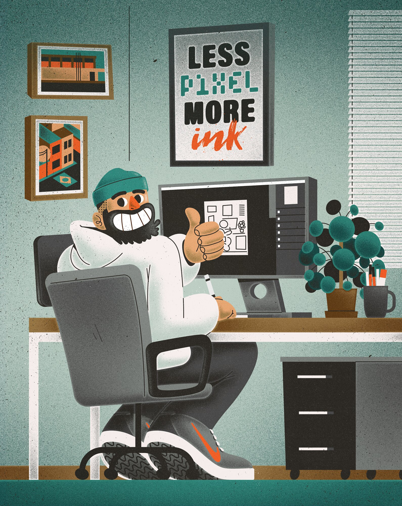
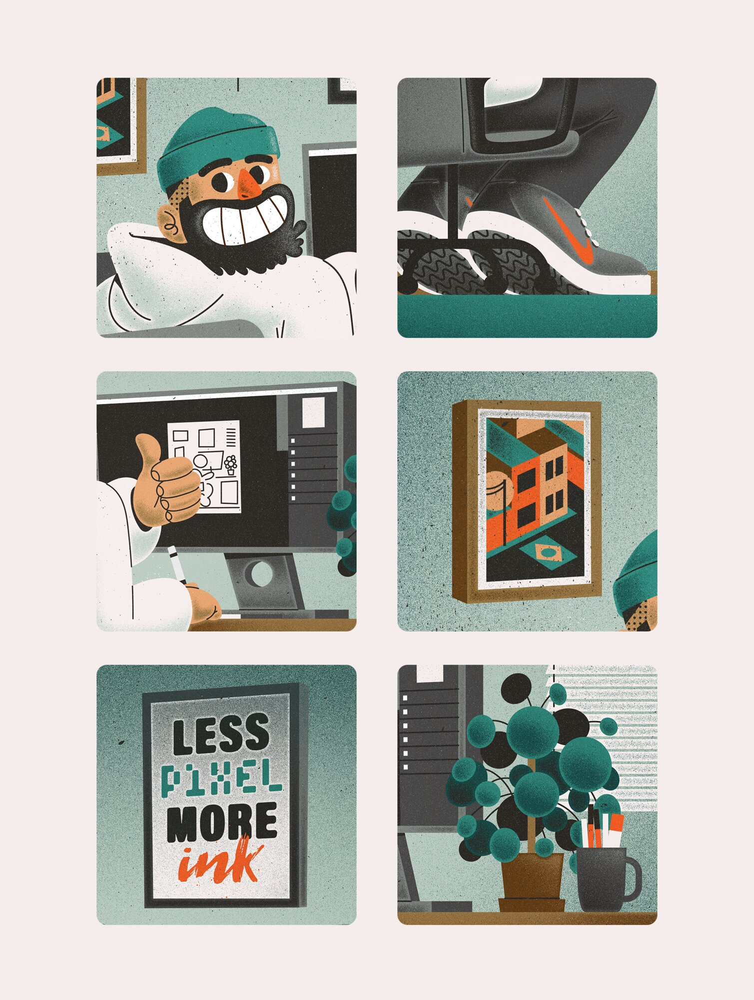
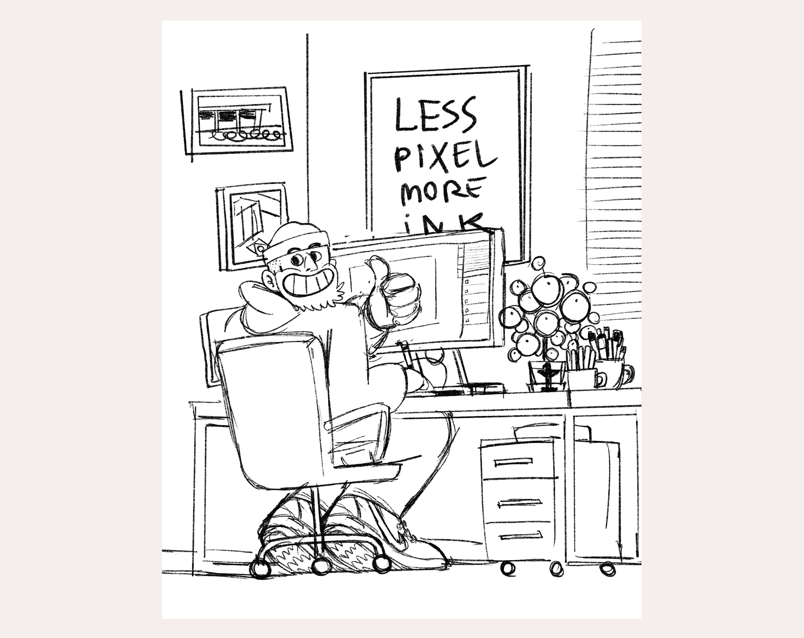
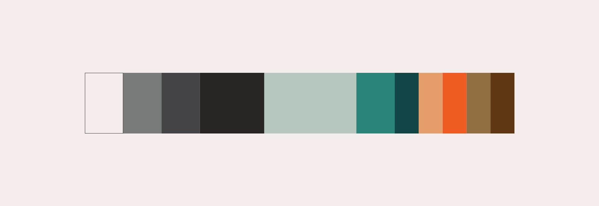

#DRAWYOURWORKSPACE
ILLUSTRATION
Finally starting the freelance life, I thought of making an illustration that could represent this moment for me and I had the idea of showing the place where I will spend most of my time from now on, working, creating, evolving and most importantly, drawing: my own workspace.



